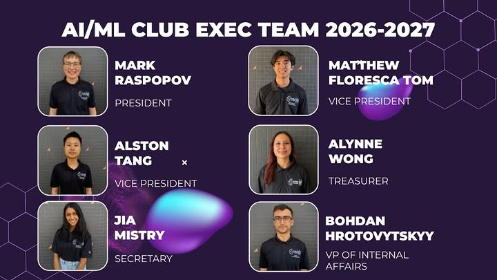

Our Officers
The executive team that leads the club's events, workshops, and community.
Officers Team Photo

Source: Instagram post
Executive Team
Roles and responsibilities are subject to change each academic year. Reach out to any officer to get involved.
- Mark Raspopov - Founder & President. Leads club strategy, general meetings, and external partnerships. Coordinates with the club advisor on academic-year planning.
- Matthew Floresca Tom - Vice President. Supports the president in day-to-day operations, delegates tasks across the executive team, and helps organize hackathons and events.
- Alston T. - Project Manager. Plans and runs workshops and projects, helping students of all backgrounds learn AI and ML both in theory and in practice.
- Brian Andrade - Fundraising Chair. Secures sponsorships and funding to support club events, competitions, and resources.
- Bohdan Hrotovytskyy - Executive Member. Supports tabling, membership drives, and event logistics throughout the academic year.
- Clara Garza - Executive Member. Supports club operations and community outreach at campus and STEM events.
- Aaran Li - Executive Member. Contributes to event planning, tabling, and member engagement.
- Irene Chen - Executive Member. Supports club operations, communications, and community engagement.
Club Advisor
The club is advised by faculty who help manage and guide its activities.
Dr. Mohammad Pourhomayoun - Club Advisor